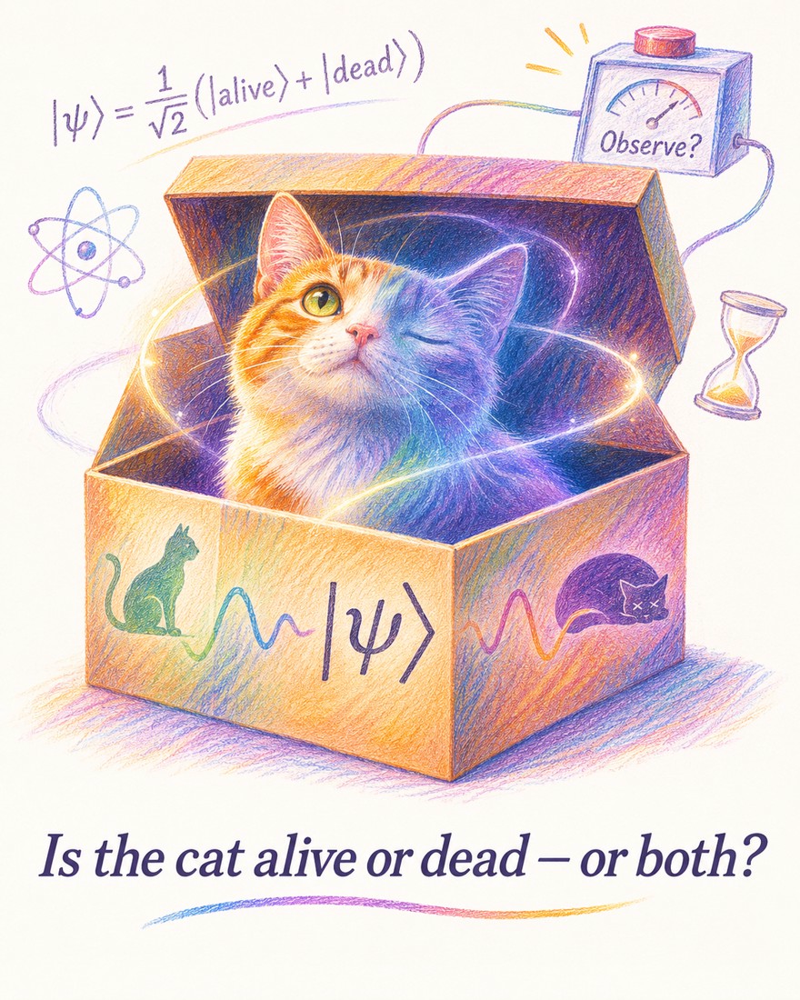
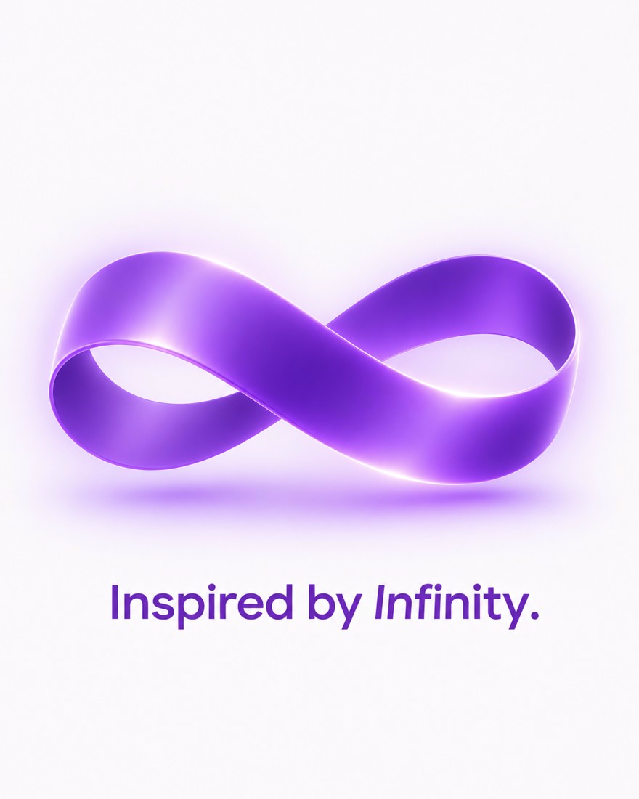

Build intelligence.
Deploy real solutions.
Forward Deployed Engineering (FDE) at Aristoverse.
AI full-stack developers, software developers, fresh graduates and students who want to explore technology.
An FDE works with customers to understand problems, build solutions and check that they work. If you are interested in AI full-stack development, you can apply for FDE roles here. New to FDE? We will train you if you join our practical work stages. School and college students can explore a separate learning path. There is no recruitment fee or paid course to buy.
Choose your path: apply for work if eligible, or explore technology as a student. Students under 18 need a parent or legal guardian.
Work pathway: Interview → 20 working days (Stage 1) → 90 working days with a modest stipend (Stage 2) → possible job. Annual CTC: ₹2.70–40 lakh, depending on the role and your skills. No job is guaranteed. Read the full recruitment vision.
Which path is right for you?
Both paths are part of Aristoverse. Choose what fits your age, interests and plans.
I want to apply for FDE work
For AI full-stack developers, software developers, fresh graduates and eligible internship seekers. You do not need previous FDE experience. If you join, we will train you. Start with the HR interview on 2 December.
See interview rounds Work and payI want to learn as a student
For school and college students. Learn at your own pace through both periods. Under 18? Your parent or guardian must contact us and supervise you.
See student learning pathDifferent starting points. One engineering vision.
Tell us what you know, what you can do and what you want to learn.
Experienced job seekers
Have you worked before? We will ask about your roles, past results, problem-solving, work with teams or clients and current technical skills. Be ready to explain something you actually did.
Freshers
Starting your career? Tell us about your studies, projects, skills and what you have tried. We are interested in how you learn, ask questions and solve practical problems.
School and college students
Still studying? Explore FDE through the voluntary educational pathway. Minors participate with a parent or legal guardian. Eligible adults seeking internships may discuss a separate, lawful work arrangement.
Curiosity has no generation.
School and college students, including Gen Z and Gen Alpha, can explore FDE without applying for a job.

Schrödinger’s cat.
This famous imaginary experiment asks how quantum superposition relates to everyday experience. It is a reason to question assumptions and explore ideas, not an experiment to perform on a real cat.
Discover. Experiment. Understand.
Explore AI, engineering and problem-solving through safe practice projects. Use public or made-up data. Learn at a pace that fits your studies.
If you are under 18, you and your parent or legal guardian must agree. Your parent or guardian must supervise you. You may stop at any time.
Build. Verify. Deploy.
Eligible work applicants can go through Stage 1 (20 working days) and Stage 2 (90 working days with a stipend). A job may be offered after both stages.
The learning path is not a job or internship. Adult students who want an internship or job can ask about a separate work arrangement.
Student learning: 20 + 90 days
Explore the foundations
Observe demonstrations, ask questions, learn how technology works, and try safe, age-appropriate exercises.
Continue your exploration
Try optional practice challenges and personal projects. Get feedback and learn from it. There are no required working days, clock-ins, customer tasks or work targets.
Keep your possibilities open
Continue your studies and interests. When eligible, you can apply separately for an internship or job.
No minor will be assigned client work, sales outreach or access to live systems or private customer data. Students in the learning path do not replace employees. The employment CTC and Stage 2 stipend do not apply to this path. Studies, rest and age rules for tools come first.
Three interview rounds.
These three rounds are for work applicants. Students joining the learning path should contact us separately. We will tell you if you are invited to the next round.
HR Interview
We ask about your background, interest in FDE, communication skills, time available, work location and pay expectations.
For all eligible work applicants.
Technical Interview
Solve a small practice problem: understand the customer, build or explain a solution, test it and explain its limits. We look at how you think, not memorised answers.
Tasks match your experience and use safe practice data. Interviews do not require unpaid customer work.
Leadership Team Interview
Explain how you would solve a customer problem, manage limits on time and cost, and tell others how to use your solution. Discuss the role, support and written terms.
Arranged for applicants invited to this round.
Rounds 2 and 3 will be arranged separately for invited applicants, unless your invitation says otherwise.
What to prepare.
Keep it simple. This is an interview about your experience, work, interests and practical ability.
Bring or prepare
- Your updated CV or a simple summary of your background.
- One or two projects, tasks or experiences you can clearly explain.
- Questions about the work, remote or in-person schedule and next steps.
- Your confirmed interview invitation and any campus entry documents specifically requested by the team.
Use official communication
For verification, interview questions or changes to your appointment, contact the official recruitment team through support@aristoverse.org or hr@aristocratITsolutions.com. Official phone and WhatsApp: +91 98945 95035.
Please use the official recruitment channels for all interview enquiries.
Do not pay anyone for a job offer, interview or placement. Report any request for a recruitment fee to the official email.
What does an FDE do?
FDE is the focus of our recruitment. It combines engineering, AI, customer communication and real-world problem-solving.

Keep exploring.
A Möbius strip invites us to look beyond familiar boundaries. Keep learning, ask better questions and explore new possibilities.
Understand the customer
Find out how the customer works, what is wrong and what a good result would look like.
Build and test a solution
Build or connect the right tools. Test the solution for accuracy, cost, safety and ease of use. Help put it into use.
Improve and reuse
Check whether the solution helps. Write down what worked, fix problems and reuse good ideas in future projects.
Five skills that work together
Knowing a tool is not enough. You also need to understand the people who will use it.
What this means in practice
Example: a customer spends too much time reading documents by hand. An FDE measures the current time and error rate, builds a small tool with safe data, tests it and plans how people will check its answers.
The goal is a working solution, not just a presentation. Explain what it can and cannot do, and who will maintain it.
At Aristoverse: students in the learning path try safe practice projects; fresh graduates start with small supervised tasks; experienced engineers can take on more responsibility.
What do FDE jobs actually pay?
Examples of yearly pay advertised by employers in India, checked on 26 November 2026. These are individual job ads, not average salaries or job offers from Aristoverse. Ads may close or change.
India · advertised ranges
These are advertised money amounts. Company shares, benefits, taxes and take-home pay are not shown. Employers may count pay differently.
Global context
United States: Palantir FDE-related role for new graduates, New York advertises US$135,000–145,000/year. This is one competitive graduate job, not the usual graduate salary.
Singapore: OpenAI's FDE job ad asks for at least five years of relevant engineering or deployment experience, including work with customers.
Pay depends on the country, company, skills, experience and responsibilities. We do not have reliable global FDE salary figures for people under 30.
How responsibility can grow
| Example career stage | Realistic responsibility |
|---|---|
| Student | Learn and try supervised projects |
| Fresher | Build and test small solutions |
| 1–3 years | Complete small projects with less help |
| 3–5 years | Take charge of larger projects and customer needs |
| 5+ years | Lead system design, deployment and customer communication |
These are examples, not strict age or experience rules. Progress depends on what you can do.
₹2.70–40 lakh annual employment CTC
CTC means Cost to Company: the total yearly cost of employing you, not your take-home salary. After you pass both stages, you may receive a job offer based on your skills and responsibilities. ₹40 lakh is not a promised starting salary.
₹2.70L
₹40L
This is the employment pay range, not a guaranteed salary increase. The Stage 2 stipend is separate.
Learn the basics
We train you to solve problems with AI, check answers and communicate clearly. Pass Stage 1 to be considered for Stage 2.
Work on real FDE tasks
Work on real customer projects under supervision, with a modest stipend. Agree in writing on the amount, payment dates, hours and expenses before starting.
₹2.70–40 lakh annual CTC
Pass both stages to be considered for a job. The actual CTC depends on your skills and the role, and will be stated in a written offer. A job is not guaranteed.
Both stages total 110 working days. Payments owed for either stage must be made even if no job is offered later.
You do not need to buy a course or pay for an interview. Agree on work and payment terms before starting.
Registered companies. Official contacts.
Both businesses are privately held Indian companies with separate legal identities.
Aristoverse Deeptech Private Limited
Registered in 2024. We explore practical uses of AI across different fields.
Aristocrat IT Solutions Private Limited
Registered in 2015 as a separate Indian company.
Innovation and infrastructure support
Our technology work has received support from Tamil Nadu Technology (iTNT) Hub since 2024 and from Sathyabama Innovation Council. There are no recruitment interviews at Sathyabama. The 2 December interviews take place at iTNT Hub, Anna University Campus only.
Aristoverse is listed on iTNT Hub's published startup portfolio. Learn about Sathyabama Innovation Council. Sathyabama supports innovation; it is not the interview host or employer for this event.
For interview and client meetings
We use Tamil Nadu Technology (iTNT) Hub at Anna University Campus, Guindy area, Chennai for interviews and client engagement.
3rd Floor, Sir C. V. Raman Science Block, Anna University Campus, Kotturpuram, Chennai 600025, Tamil Nadu, India. This is the interview and meeting venue.
Official phone / WhatsApp: +91 98945 95035 · Message us
From Stage 1 to possible employment.
If invited after the interviews, work applicants can start Stage 1 (20 working days). Passing Stage 1 may lead to Stage 2 (90 working days). Agree on pay, hours, location and duties before work starts. These terms do not apply to the student learning path.
During Stage 1
- Agree on working days, hours, remote or office schedule and who will review your work.
- Use only tools and accounts approved for the task.
- Use an agreed channel for work messages and daily updates.
- Read the task, ask questions and confirm what the finished result should look like.
- Share your checked work, sources, problems and next steps.
- Respect client data, confidentiality and other people's time.
Payment, stipend, roles and promotion
You can read this page and ask questions without signing anything. Before real work begins, agree in writing on the tasks, hours, pay and contact person. Required work documents must be provided. Existing agreements still apply.
Quick Stage 1 self-check
Try this optional check if you are considering Stage 1. It is not an interview test, job decision or agreement.
No signature. No registration. No data is sent. This is only a simple way to see what you understood.
How to share your work
Know the goal, show the result and explain how you checked it. You can use AI, but you must check its answers.
Before you say “done”
- Task: What was I asked to solve?
- My answer: What did I produce?
- Evidence: Which reliable sources, files or tests support it?
- Verification: What did I check myself?
- Unknowns: What have I not confirmed?
- Next step: Who needs the result, and what happens next?
Use these words: Verified · Assumption · Not yet known.
Create a simple work update
Type a practice update here. Nothing you type is sent or saved by this page. Remove private information before sharing it through an approved work channel.
Simple task board: To do → Doing → Done
For each task, agree who will do it, when it is due and what counts as finished. This is a sample board only.
TO DO
DOING
DONE
How we review work
We look at actual work, not confidence or big words. These are example review areas. Any final review rules must be explained first.
| Area | What good work looks like | Starting weight* |
|---|---|---|
| Delivery and quality | Finishes an agreed task, checks results and fixes errors. | 25% |
| Learning and improvement | Uses feedback, learns tools and improves a second attempt. | 20% |
| Accuracy and honesty | Separates known facts, assumptions and unknowns. | 15% |
| Communication | Shares progress and raises blockers before they cause surprises. | 15% |
| Security and client care | Uses approved data, protects access and avoids false promises. | 15% |
| Teamwork and handoff | Works with others and leaves clear notes. | 10% |
*Example scores only. They are not pass marks or pay rules. Reviewers should explain the final rules and give you a chance to improve.
A simple five-day work plan
Try this plan from your next agreed workday. It does not extend or restart Stage 1.
Review hours, work, tools, pay terms and the reviewer. Ask about unclear points.
Complete one small practical task and record the evidence.
Show the result, demonstrate it and receive specific feedback.
Repeat a similar task and apply the feedback.
Agree on strengths, needed support and suitable next responsibilities.
The full 20-working-day journey
Understand a customer problem, use approved AI, check facts and share daily updates.
Build a small working example, connect tools, test it and write notes.
Practice talking to a customer, check results and protect data.
Show how your solution works, check its results and explain how others can use it.
Use the right tools. Protect real data.
We value the ability to choose, learn and verify tools. We do not confuse having a subscription with being skilled.
AI and commercial tools
- Use an approved advanced AI tool when needed. Compare tools and check the answers.
- Free or open-source tools may also help. Explain why you chose a tool.
- Do not put private, personal or client information into an unapproved AI service.
- You do not need to personally buy a paid subscription merely to complete this page's self-check. Work-required access and expenses need clear arrangements.
- You can learn tools such as Jira, Kanban, Clay or Apollo during Stage 1. Show how you use the tools.
Privacy and professional identity
- The self-check and work-update boxes on this page do not send information to our server.
- Do not paste passwords, ID numbers, client lists, confidential files or private records here.
- You may be able to meet online first. Access to work systems requires approval and identity checks.
- Use only approved work channels and communicate your availability.
- Ask who can see your work, what data is needed and when it is removed.
Common questions.
Short answers for people coming for their first interview.
Email the recruitment teamIs this a paid training course?
No. We recruit for FDE roles and eligible internships. We provide practical training to those who join our work stages. There is no course purchase or recruitment fee. Students can also explore a separate learning path.
Can I apply if I am learning AI full-stack development and have never heard of FDE?
Yes. AI full-stack development is a useful starting point. You do not need previous FDE experience. We will train those who join, beginning with the 20-working-day Stage 1. If you pass and are invited to Stage 2, you can apply those skills to supervised customer work with an agreed stipend. The actual recruitment role is FDE, not a separate full-stack-only position.
Who can apply?
Experienced workers, fresh graduates and eligible interns can apply for FDE work. School and college students can ask about the learning path. Under 18? Ask your parent or legal guardian to contact us.
Can school students or minors participate?
Yes. Under-18 students can learn with their own agreement and ongoing parent or guardian supervision. They can explore both the 20-day and 90-day periods. There is no client work or job offer. A guardian should email us first.
Do students have to work for 90 days?
No. Student learning is optional and fits around studies. There are no work targets or attendance quotas. The 90-working-day Stage 2 with a stipend is only for eligible work applicants.
What happens in Round 1?
Round 1 is the HR interview. We ask about your background, interests, communication, availability and work expectations. Ask questions if anything is unclear.
What are Rounds 2 and 3?
Round 2 is a technical interview with practical questions or a small practice task. Round 3 is a discussion with the leadership team. The team will contact you if you are invited to the next round.
Will all three rounds happen on 2 December?
Do not assume so. 2 December is listed for the Round 1 HR interviews. The dates and format of later rounds will be communicated separately.
What time should I reach Anna University?
Round 1 is scheduled for Wednesday, 2 December 2026 at 2:00 PM IST. Confirm your appointment and campus entry instructions with the recruitment team before travelling.
Can I use my old 25 November entry pass?
No. That pass is for the earlier induction and is not valid for 2 December. This page does not issue a new pass for the December interviews. Campus access still needs host/security approval.
What is the actual employment CTC range at Aristoverse?
₹2.70 lakh to ₹40 lakh annual CTC for possible employment after successful completion of the 20-working-day Stage 1 and subsequent 90-working-day Stage 2. The actual offer depends on demonstrated capability and role scope and requires mutual written agreement. The ₹40 lakh ceiling is not a promise to any applicant or a typical entry-level salary. ₹22,500 per month is the lower-end CTC equivalent, not take-home pay. Other employers’ advertised compensation is not our offer.
What stipend is paid during Stage 2?
Stage 2 involves a modest stipend arrangement for supervised applied FDE work. The amount, payment dates, hours and other terms will be agreed in writing before Stage 2 starts. Agreed and legally required payments are not conditional on receiving a later job offer.
What is the 20-working-day Stage 1?
If invited, you can agree to join 20 working days of practical FDE training, guided tasks and feedback. This may include remote and office work. It is not a job offer.
What is the 90-working-day Stage 2?
After passing Stage 1, you may be invited to work for 90 working days with supervision and a modest stipend. You will learn about customer needs, build and test solutions, and help put them into use. You may receive a job offer after review.
Do I have to sign the Stage 1 information page?
No. Reading the guide or using the self-check does not require a signature. Actual work and any legally required employment or pay terms must be properly agreed or documented.
Do I have to buy a paid AI subscription to interview?
No paid AI subscription is needed just to attend Round 1. If a later work task needs paid tools, access and expense arrangements must be discussed beforehand.
How can I check whether an interview message is genuine?
Verify both legal company names and CINs on the MCA company records site. Official contacts: support@aristoverse.org, hr@aristocratITsolutions.com and +91 98945 95035. Use the official recruitment channels. There is no recruitment fee.
Come ready to solve a real-world problem.
Applying for work? Start with Round 1 HR on 2 December at 2:00 PM IST. Interested in student learning? Use the student enquiry link. Confirm your appointment and campus entry before travelling.